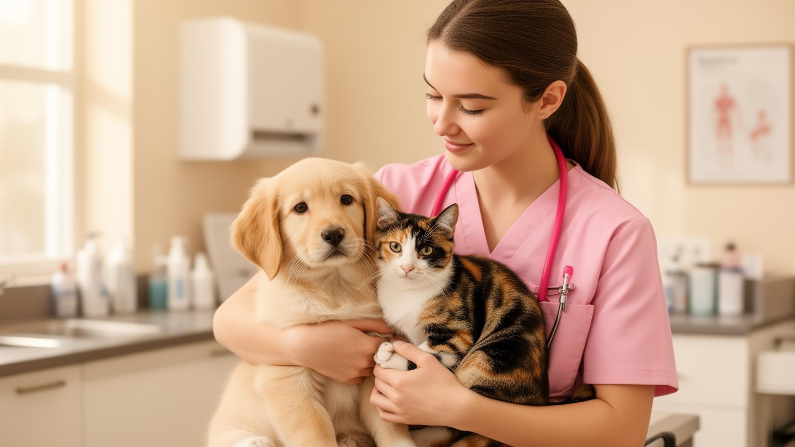
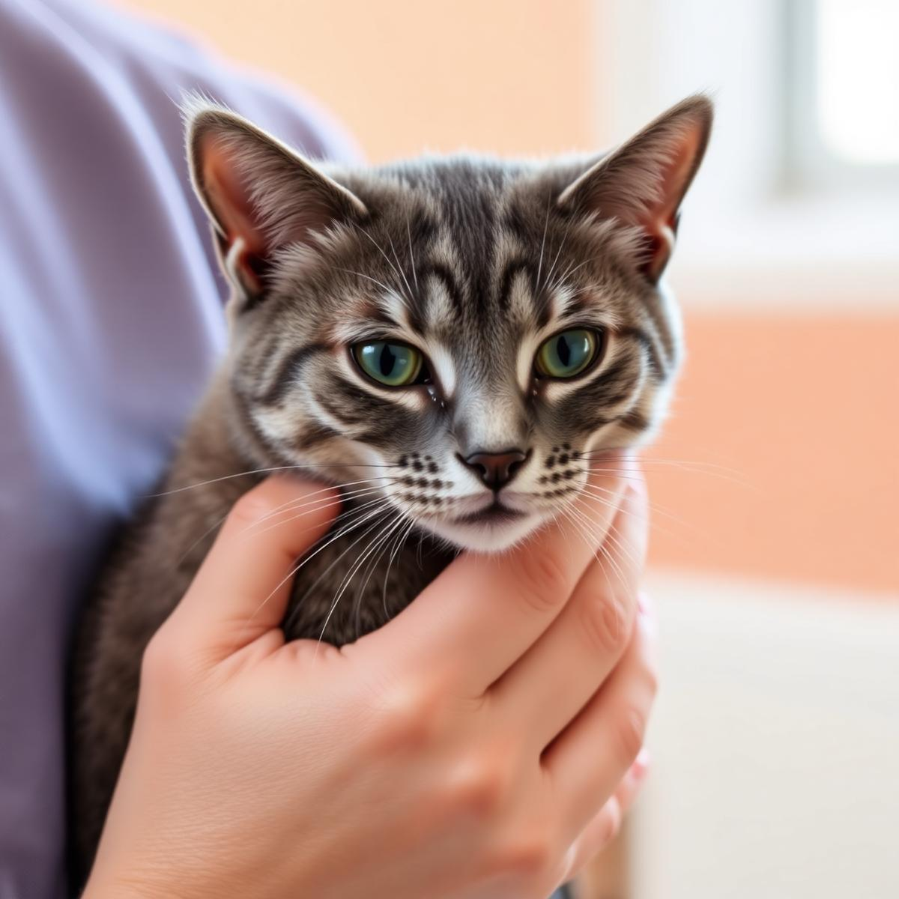
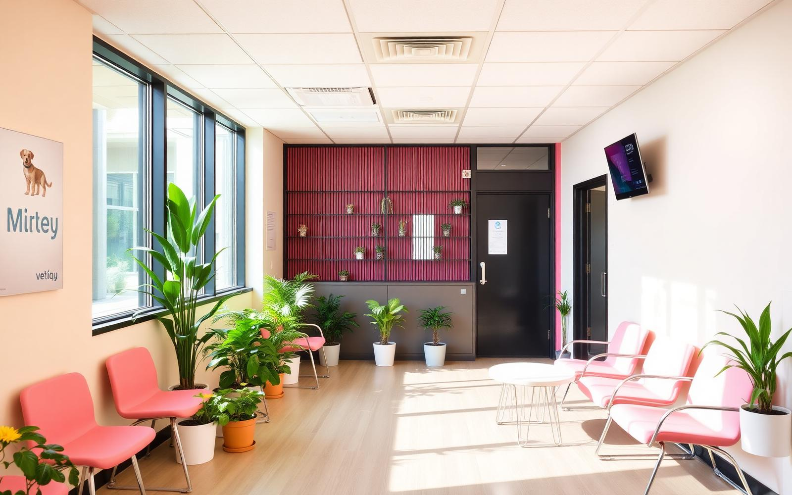

💗
Atendimento 24h
Clínica, emergência, internação e UTI com equipe sempre presente.
- Clínico
- Emergência
- Internação
- Intensivista
Há 5 anos, somos a primeira escolha de quem busca excelência, segurança e acolhimento para cães e gatos. Tecnologia, equipe especialista e o carinho de quem entende: seu pet é família.

Resposta rápida
Equipe pronta agora — emergência sem espera.
Nossos números

Quem somos
Escolher onde confiar a saúde do seu pet é uma das decisões mais importantes que você pode tomar. Por isso, trabalhamos todos os dias para ser a primeira escolha de quem busca excelência, segurança e carinho.
Nossa estrutura foi pensada para oferecer tudo o que seu pet precisa em um só lugar: atendimento 24 horas, laboratório próprio, exames rápidos, internação com suporte semi-intensivo e mais de 15 especialidades veterinárias.
Entendemos que, quando um pet precisa de atendimento, toda a família vive aquele momento junto. Acolhemos pacientes — e também quem ama eles.
★★★★★ 4,5 estrelas no Google · 698 avaliações
Serviços e especialidades
Da rotina à emergência, da especialidade ao bem-estar — tudo em um só lugar.
Clínica, emergência, internação e UTI com equipe sempre presente.
Mais de 15 áreas com especialistas dedicados ao seu pet.
Centro cirúrgico moderno com protocolos anestésicos seguros.
Recuperação ativa com terapias integrativas e personalizadas.
Laboratório próprio e exames de imagem com resultados rápidos.
Conforto, carinho e supervisão veterinária no dia a dia.

O que nos diferencia
Tecnologia, experiência e uma equipe preparada para oferecer o melhor atendimento. Mas, acima de tudo, pessoas que entendem que seu pet é parte da sua família.
Educação continuada para a medicina veterinária.
Cursos, eventos e networking para profissionais que, como nós, acreditam que conhecimento salva vidas.
Conhecer o CEAV →Um programa para cuidar do que importa.
Benefícios, prevenção e acompanhamento próximo para que seu pet tenha o melhor cuidado em todas as fases da vida.
Saiba mais →